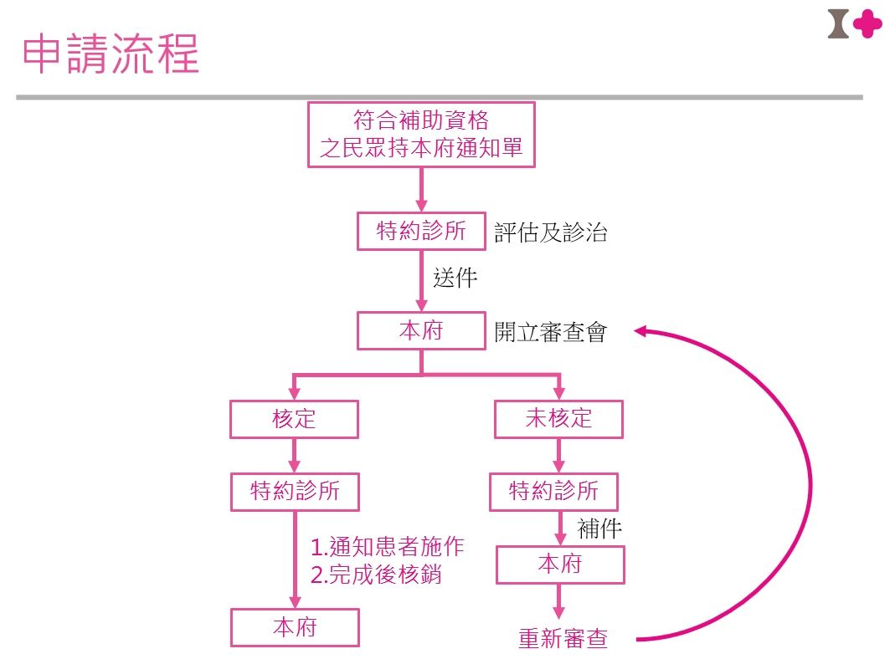

115年度假牙補助裝置計畫申請須知（Q&A）
以下說明整理自嘉義市政府社會處長青及社會行政科公告內容，分別適用「一般身分別」與「中低收入」 兩個各自獨立的補助方案，請依自身身分別參閱對應段落。
📝 一般身分別方案｜申請資格
Q1：一般身分別老人補助裝置假牙的申請資格為何？
凡年滿75歲且設籍嘉義市滿5年以上者，終身可申請一般身分別老人假牙補助一次。
本計畫認定之補助對象為民國40年12月31日(含)前出生者，且於民國110年前入籍本市之長者（本市東西區互遷者視為戶籍異動，需自行舉證已住滿5年以上）。
📮 一般身分別方案｜通知單發放
Q2：115年度的補助通知單何時發放？
本補助為實物給付，補助款項由診所逕自向本府申請。115年度之一般身分別老人補助裝置假牙通知單將於過年後陸續發放。
Q3：已符合資格卻尚未收到通知單，該怎麼辦？
- 請先電洽 05-2254321#153 或 #120 找假牙承辦人，釐清狀況為未發放或是需補發。
- 確認為「需補發者」可逕至嘉義市政府社會處長青科窗口領取通知單，亦或選擇郵寄。
- 如經查詢後為「未發放者」，請攜帶申請人身分證及戶籍謄本至嘉義市政府社會處（地址：嘉義市東區中山路199號）申請，證件確認後即歸還。
☎️ 一般身分別方案｜諮詢窗口
Q4：有問題可以撥打哪支電話諮詢？
若有其他問題請電洽 05-2254321#153 或 #120（嘉義市政府社會處長青及社會行政科）。
📝 中低收入方案｜補助對象與資格
Q5：中低收入老人補助裝置假牙的補助對象與條件為何？
凡設籍嘉義市年滿65歲以上或年滿55歲以上原住民，且屬以下資格其中一項者：
- 列冊低收入戶
- 中低收入戶
- 領有中低收入老人生活津貼
- 領有身心障礙者生活補助費
- 經各級政府全額補助收容安置
- 經嘉義市政府補助身心障礙者日間照顧及住宿式照顧費用達百分之五十以上
並經醫師評估缺牙需裝置活動假牙者，備齊相關資料後，均可前往嘉義市合約牙醫院（診所）進行篩檢。
📋 中低收入方案｜應備文件
Q6：申請中低收入方案需要準備哪些文件？
1. 嘉義市東、西區區公所開立下列證明文件之一：
- 低收入戶證明書正本
- 中低收入戶證明書正本
- 中低收入老人生活津貼證明書正本
- 身心障礙生活補助證明書正本
或嘉義市政府核定下列補助之一：
- 「補助收容安置」公函影本
- 「補助身心障礙者日間照顧及住宿式照顧費用達50%以上」公函影本
- 社會處發送通知單（通知單將於農曆過年後陸續發放，通知單造冊年齡統一為民國49年12月31日前出生者；如為115年當年度才滿65歲者，請逕洽嘉義市政府申請）
2. 身分證正、背面影本。
🔄 中低收入方案｜申請流程
Q7：中低收入方案的申請流程為何？

文字說明（圖片內容之無障礙替代文字）：
- 符合補助資格之民眾持本府通知單，前往特約診所接受評估及診治。
- 特約診所送件至嘉義市政府。
- 嘉義市政府開立審查會，結果分為「核定」與「未核定」兩種：
- 核定：由特約診所通知患者施作，完成後核銷送嘉義市政府，流程結束。
- 未核定：由特約診所補件後送嘉義市政府，再送回審查會重新審查。
🦷 中低收入方案｜補助項目優先次序
Q8：補助條件的優先次序為何？
- 全口活動假牙
- 上顎半口活動假牙
- 下顎半口活動假牙
- 上顎半口活動假牙，併下顎部分活動假牙
- 下顎半口活動假牙，併上顎部分活動假牙
- 上、下顎部分活動假牙
- 上顎部分活動假牙
- 下顎部分活動假牙
- 固定式假牙（牙橋或牙冠）
- 活動假牙維修費（假牙破裂維修費、假牙添加費、假牙線勾、假牙硬式襯底）
📅 中低收入方案｜申請期間與重新裝置
Q9：中低收入方案補助多久可以重新裝置一次？
本項補助條件自115年1月1日起至115年12月31日止受理申請，補助對象同一顎已取得相同補助項目者，須於滿五年以上（即已於民國110年12月31日以前完成裝置者），經評估有重新裝置必要，始得重新提出申請。但假牙維修費不在此限。
🆕 中低收入方案｜合約診所異動公告
Q10：115年6月1日起中低收入方案新增哪些合約診所？
自115年6月1日起，新增以下3家診所為中低收入方案合約診所：
- 杏林牙醫診所，嘉義市東區吳鳳北路147號
- 劍橋牙醫診所，嘉義市西區新民路618-3號
- 大明牙醫診所，嘉義市西區湖子內路338號
說明：以上3家診所原已列於「一般身分別」方案合約名單，本次公告新增其亦服務「中低收入」方案。 嘉義市政府開放資料平台之中低收入合約名單 CSV 截至本頁最近一次更新時尚未反映此異動，本頁依 公告文字人工補登，如兩份名單日後合併更新，請以官方最新公告為準。
☎️ 諮詢窗口
Q11：有問題可以撥打哪支電話諮詢？
若有其他問題請電洽 05-2254321#153 或 #120（嘉義市政府社會處長青及社會行政科）。
資料來源：嘉義市政府社會處長青及社會行政科。中低收入方案原始資料： 點此下載； 一般身分別方案原始公告 PDF： 點此下載
合約醫療院所名冊
地圖僅標示「中低收入」方案（含經緯度座標）之院所；「一般身分別」方案來源 PDF 無座標資料，未標示於地圖，惟仍列於下方表格。
各行政區院所數
方案分布
資料明細
本頁合併兩份各自獨立的嘉義市假牙補助合約診所名單，兩方案合約診所名冊有重疊但不完全相同，本站 未依名稱比對合併，各筆資料保留其原始來源方案標記；「機構類型」（醫院／牙醫診所）由機構名稱是否 含「醫院」二字啟發式判斷，非官方分類欄位，僅供參考。